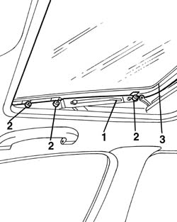

7030B18 sliding roof glass - r+r
- Path
- Procedures > 70 FITTINGS > 7030 SUN ROOF AND HOOD > 7030B sliding roof > 7030B18 sliding roof glass - r+r
- Kind
- repair procedure (removal / refitting; the operation number is the code)
- Applies to
- all engines; all production periods
- Interactive page
- https://sloeber94.github.io/elrnDB-a156/en/#/3238757
Applies to: all engines; all production periods
 Removing
Removing
 Refitting
Refitting1. Place the sun roof in the tilted open position.
2. Undo the bolts.
3. Remove the glass.

Applies to: all engines; all production periods
Refitting
RemovingCheck that the transparent panel is not damaged.
Reposition the transparent panel.
Topics linked from this page (1)
Topics that link to this page (8)
- Q05 SUN ROOF STICKING
- Q06 SUN ROOF DOES NOT STOP IN END OF TRAVEL POSITION
- S76 SUN ROOF NOISY / WITH ROOF CLOSED
- 7030B22 glass seal - r+r with glass removed
- 7030B28 sliding roof blind - r+r
- 7030B38 sliding roof drainage pipes (water drain) - check
- 7030B40 drainage channel - r r
- 7030B54 sun roof systems